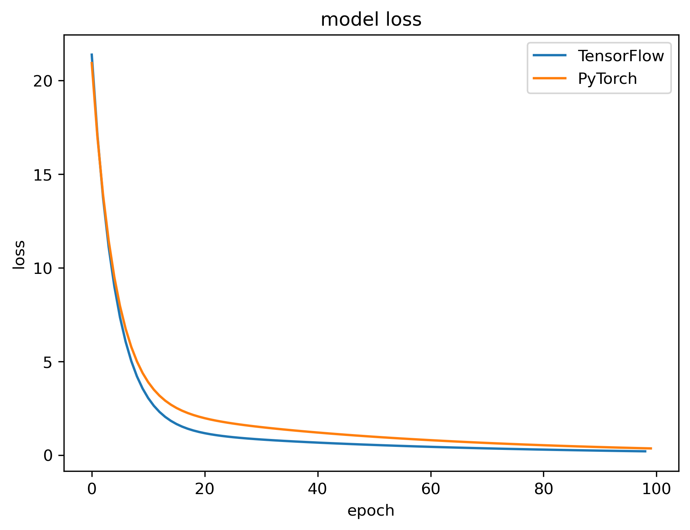

<!DOCTYPE html>
<html xmlns="http://www.w3.org/1999/xhtml" lang="en" xml:lang="en"><head>

<meta charset="utf-8">
<meta name="generator" content="quarto-1.7.32">

<meta name="viewport" content="width=device-width, initial-scale=1.0, user-scalable=yes">

<meta name="author" content="Thomas Manke">
<meta name="dcterms.date" content="2025-08-02">

<title>Frameworks – Neural Networks and Deep Learning</title>
<style>
code{white-space: pre-wrap;}
span.smallcaps{font-variant: small-caps;}
div.columns{display: flex; gap: min(4vw, 1.5em);}
div.column{flex: auto; overflow-x: auto;}
div.hanging-indent{margin-left: 1.5em; text-indent: -1.5em;}
ul.task-list{list-style: none;}
ul.task-list li input[type="checkbox"] {
  width: 0.8em;
  margin: 0 0.8em 0.2em -1em; /* quarto-specific, see https://github.com/quarto-dev/quarto-cli/issues/4556 */ 
  vertical-align: middle;
}
/* CSS for syntax highlighting */
html { -webkit-text-size-adjust: 100%; }
pre > code.sourceCode { white-space: pre; position: relative; }
pre > code.sourceCode > span { display: inline-block; line-height: 1.25; }
pre > code.sourceCode > span:empty { height: 1.2em; }
.sourceCode { overflow: visible; }
code.sourceCode > span { color: inherit; text-decoration: inherit; }
div.sourceCode { margin: 1em 0; }
pre.sourceCode { margin: 0; }
@media screen {
div.sourceCode { overflow: auto; }
}
@media print {
pre > code.sourceCode { white-space: pre-wrap; }
pre > code.sourceCode > span { text-indent: -5em; padding-left: 5em; }
}
pre.numberSource code
  { counter-reset: source-line 0; }
pre.numberSource code > span
  { position: relative; left: -4em; counter-increment: source-line; }
pre.numberSource code > span > a:first-child::before
  { content: counter(source-line);
    position: relative; left: -1em; text-align: right; vertical-align: baseline;
    border: none; display: inline-block;
    -webkit-touch-callout: none; -webkit-user-select: none;
    -khtml-user-select: none; -moz-user-select: none;
    -ms-user-select: none; user-select: none;
    padding: 0 4px; width: 4em;
  }
pre.numberSource { margin-left: 3em;  padding-left: 4px; }
div.sourceCode
  {   }
@media screen {
pre > code.sourceCode > span > a:first-child::before { text-decoration: underline; }
}
</style>


<script src="../site_libs/quarto-nav/quarto-nav.js"></script>
<script src="../site_libs/quarto-nav/headroom.min.js"></script>
<script src="../site_libs/clipboard/clipboard.min.js"></script>
<script src="../site_libs/quarto-search/autocomplete.umd.js"></script>
<script src="../site_libs/quarto-search/fuse.min.js"></script>
<script src="../site_libs/quarto-search/quarto-search.js"></script>
<meta name="quarto:offset" content="../">
<script src="../site_libs/quarto-html/quarto.js" type="module"></script>
<script src="../site_libs/quarto-html/tabsets/tabsets.js" type="module"></script>
<script src="../site_libs/quarto-html/popper.min.js"></script>
<script src="../site_libs/quarto-html/tippy.umd.min.js"></script>
<script src="../site_libs/quarto-html/anchor.min.js"></script>
<link href="../site_libs/quarto-html/tippy.css" rel="stylesheet">
<link href="../site_libs/quarto-html/quarto-syntax-highlighting-234273d1456647dabc34a594ac50e507.css" rel="stylesheet" class="quarto-color-scheme" id="quarto-text-highlighting-styles">
<link href="../site_libs/quarto-html/quarto-syntax-highlighting-dark-0348920b7671f696dc9078d39bff215e.css" rel="stylesheet" class="quarto-color-scheme quarto-color-alternate" id="quarto-text-highlighting-styles">
<link href="../site_libs/quarto-html/quarto-syntax-highlighting-234273d1456647dabc34a594ac50e507.css" rel="stylesheet" class="quarto-color-scheme-extra" id="quarto-text-highlighting-styles">
<script src="../site_libs/bootstrap/bootstrap.min.js"></script>
<link href="../site_libs/bootstrap/bootstrap-icons.css" rel="stylesheet">
<link href="../site_libs/bootstrap/bootstrap-30d9df29d9c5c2c0b4ed2aa1c54fc432.min.css" rel="stylesheet" append-hash="true" class="quarto-color-scheme" id="quarto-bootstrap" data-mode="light">
<link href="../site_libs/bootstrap/bootstrap-dark-5ebd04e0db2cf30c2309285dab7fd839.min.css" rel="stylesheet" append-hash="true" class="quarto-color-scheme quarto-color-alternate" id="quarto-bootstrap" data-mode="dark">
<link href="../site_libs/bootstrap/bootstrap-30d9df29d9c5c2c0b4ed2aa1c54fc432.min.css" rel="stylesheet" append-hash="true" class="quarto-color-scheme-extra" id="quarto-bootstrap" data-mode="light">
<script id="quarto-search-options" type="application/json">{
  "location": "navbar",
  "copy-button": false,
  "collapse-after": 3,
  "panel-placement": "end",
  "type": "overlay",
  "limit": 50,
  "keyboard-shortcut": [
    "f",
    "/",
    "s"
  ],
  "show-item-context": false,
  "language": {
    "search-no-results-text": "No results",
    "search-matching-documents-text": "matching documents",
    "search-copy-link-title": "Copy link to search",
    "search-hide-matches-text": "Hide additional matches",
    "search-more-match-text": "more match in this document",
    "search-more-matches-text": "more matches in this document",
    "search-clear-button-title": "Clear",
    "search-text-placeholder": "",
    "search-detached-cancel-button-title": "Cancel",
    "search-submit-button-title": "Submit",
    "search-label": "Search"
  }
}</script>

  <script src="https://cdnjs.cloudflare.com/polyfill/v3/polyfill.min.js?features=es6"></script>
  <script src="https://cdn.jsdelivr.net/npm/mathjax@3/es5/tex-chtml-full.js" type="text/javascript"></script>

<script type="text/javascript">
const typesetMath = (el) => {
  if (window.MathJax) {
    // MathJax Typeset
    window.MathJax.typeset([el]);
  } else if (window.katex) {
    // KaTeX Render
    var mathElements = el.getElementsByClassName("math");
    var macros = [];
    for (var i = 0; i < mathElements.length; i++) {
      var texText = mathElements[i].firstChild;
      if (mathElements[i].tagName == "SPAN") {
        window.katex.render(texText.data, mathElements[i], {
          displayMode: mathElements[i].classList.contains('display'),
          throwOnError: false,
          macros: macros,
          fleqn: false
        });
      }
    }
  }
}
window.Quarto = {
  typesetMath
};
</script>

<link rel="stylesheet" href="../styles.css">
</head>

<body class="nav-fixed quarto-light"><script id="quarto-html-before-body" type="application/javascript">
    const toggleBodyColorMode = (bsSheetEl) => {
      const mode = bsSheetEl.getAttribute("data-mode");
      const bodyEl = window.document.querySelector("body");
      if (mode === "dark") {
        bodyEl.classList.add("quarto-dark");
        bodyEl.classList.remove("quarto-light");
      } else {
        bodyEl.classList.add("quarto-light");
        bodyEl.classList.remove("quarto-dark");
      }
    }
    const toggleBodyColorPrimary = () => {
      const bsSheetEl = window.document.querySelector("link#quarto-bootstrap:not([rel=disabled-stylesheet])");
      if (bsSheetEl) {
        toggleBodyColorMode(bsSheetEl);
      }
    }
    const setColorSchemeToggle = (alternate) => {
      const toggles = window.document.querySelectorAll('.quarto-color-scheme-toggle');
      for (let i=0; i < toggles.length; i++) {
        const toggle = toggles[i];
        if (toggle) {
          if (alternate) {
            toggle.classList.add("alternate");
          } else {
            toggle.classList.remove("alternate");
          }
        }
      }
    };
    const toggleColorMode = (alternate) => {
      // Switch the stylesheets
      const primaryStylesheets = window.document.querySelectorAll('link.quarto-color-scheme:not(.quarto-color-alternate)');
      const alternateStylesheets = window.document.querySelectorAll('link.quarto-color-scheme.quarto-color-alternate');
      manageTransitions('#quarto-margin-sidebar .nav-link', false);
      if (alternate) {
        // note: dark is layered on light, we don't disable primary!
        enableStylesheet(alternateStylesheets);
        for (const sheetNode of alternateStylesheets) {
          if (sheetNode.id === "quarto-bootstrap") {
            toggleBodyColorMode(sheetNode);
          }
        }
      } else {
        disableStylesheet(alternateStylesheets);
        enableStylesheet(primaryStylesheets)
        toggleBodyColorPrimary();
      }
      manageTransitions('#quarto-margin-sidebar .nav-link', true);
      // Switch the toggles
      setColorSchemeToggle(alternate)
      // Hack to workaround the fact that safari doesn't
      // properly recolor the scrollbar when toggling (#1455)
      if (navigator.userAgent.indexOf('Safari') > 0 && navigator.userAgent.indexOf('Chrome') == -1) {
        manageTransitions("body", false);
        window.scrollTo(0, 1);
        setTimeout(() => {
          window.scrollTo(0, 0);
          manageTransitions("body", true);
        }, 40);
      }
    }
    const disableStylesheet = (stylesheets) => {
      for (let i=0; i < stylesheets.length; i++) {
        const stylesheet = stylesheets[i];
        stylesheet.rel = 'disabled-stylesheet';
      }
    }
    const enableStylesheet = (stylesheets) => {
      for (let i=0; i < stylesheets.length; i++) {
        const stylesheet = stylesheets[i];
        if(stylesheet.rel !== 'stylesheet') { // for Chrome, which will still FOUC without this check
          stylesheet.rel = 'stylesheet';
        }
      }
    }
    const manageTransitions = (selector, allowTransitions) => {
      const els = window.document.querySelectorAll(selector);
      for (let i=0; i < els.length; i++) {
        const el = els[i];
        if (allowTransitions) {
          el.classList.remove('notransition');
        } else {
          el.classList.add('notransition');
        }
      }
    }
    const isFileUrl = () => {
      return window.location.protocol === 'file:';
    }
    const hasAlternateSentinel = () => {
      let styleSentinel = getColorSchemeSentinel();
      if (styleSentinel !== null) {
        return styleSentinel === "alternate";
      } else {
        return false;
      }
    }
    const setStyleSentinel = (alternate) => {
      const value = alternate ? "alternate" : "default";
      if (!isFileUrl()) {
        window.localStorage.setItem("quarto-color-scheme", value);
      } else {
        localAlternateSentinel = value;
      }
    }
    const getColorSchemeSentinel = () => {
      if (!isFileUrl()) {
        const storageValue = window.localStorage.getItem("quarto-color-scheme");
        return storageValue != null ? storageValue : localAlternateSentinel;
      } else {
        return localAlternateSentinel;
      }
    }
    const toggleGiscusIfUsed = (isAlternate, darkModeDefault) => {
      const baseTheme = document.querySelector('#giscus-base-theme')?.value ?? 'light';
      const alternateTheme = document.querySelector('#giscus-alt-theme')?.value ?? 'dark';
      let newTheme = '';
      if(authorPrefersDark) {
        newTheme = isAlternate ? baseTheme : alternateTheme;
      } else {
        newTheme = isAlternate ? alternateTheme : baseTheme;
      }
      const changeGiscusTheme = () => {
        // From: https://github.com/giscus/giscus/issues/336
        const sendMessage = (message) => {
          const iframe = document.querySelector('iframe.giscus-frame');
          if (!iframe) return;
          iframe.contentWindow.postMessage({ giscus: message }, 'https://giscus.app');
        }
        sendMessage({
          setConfig: {
            theme: newTheme
          }
        });
      }
      const isGiscussLoaded = window.document.querySelector('iframe.giscus-frame') !== null;
      if (isGiscussLoaded) {
        changeGiscusTheme();
      }
    };
    const authorPrefersDark = false;
    const darkModeDefault = authorPrefersDark;
      document.querySelector('link#quarto-text-highlighting-styles.quarto-color-scheme-extra').rel = 'disabled-stylesheet';
      document.querySelector('link#quarto-bootstrap.quarto-color-scheme-extra').rel = 'disabled-stylesheet';
    let localAlternateSentinel = darkModeDefault ? 'alternate' : 'default';
    // Dark / light mode switch
    window.quartoToggleColorScheme = () => {
      // Read the current dark / light value
      let toAlternate = !hasAlternateSentinel();
      toggleColorMode(toAlternate);
      setStyleSentinel(toAlternate);
      toggleGiscusIfUsed(toAlternate, darkModeDefault);
      window.dispatchEvent(new Event('resize'));
    };
    // Switch to dark mode if need be
    if (hasAlternateSentinel()) {
      toggleColorMode(true);
    } else {
      toggleColorMode(false);
    }
  </script>

<div id="quarto-search-results"></div>
  <header id="quarto-header" class="headroom fixed-top">
    <nav class="navbar navbar-expand-lg " data-bs-theme="dark">
      <div class="navbar-container container-fluid">
      <div class="navbar-brand-container mx-auto">
    <a class="navbar-brand" href="../index.html">
    <span class="navbar-title">Neural Networks and Deep Learning</span>
    </a>
  </div>
            <div id="quarto-search" class="" title="Search"></div>
          <button class="navbar-toggler" type="button" data-bs-toggle="collapse" data-bs-target="#navbarCollapse" aria-controls="navbarCollapse" role="menu" aria-expanded="false" aria-label="Toggle navigation" onclick="if (window.quartoToggleHeadroom) { window.quartoToggleHeadroom(); }">
  <span class="navbar-toggler-icon"></span>
</button>
          <div class="collapse navbar-collapse" id="navbarCollapse">
            <ul class="navbar-nav navbar-nav-scroll me-auto">
  <li class="nav-item">
    <a class="nav-link" href="../general/Overview.html"> <i class="bi bi-menu-up" role="img">
</i> 
<span class="menu-text">Overview</span></a>
  </li>  
  <li class="nav-item dropdown ">
    <a class="nav-link dropdown-toggle" href="#" id="nav-menu-lectures" role="link" data-bs-toggle="dropdown" aria-expanded="false">
      <i class="bi bi-book" role="img">
</i> 
 <span class="menu-text">Lectures</span>
    </a>
    <ul class="dropdown-menu" aria-labelledby="nav-menu-lectures">    
        <li>
    <a class="dropdown-item" href="../lectures/01_MachineLearning/index.html">
 <span class="dropdown-text">01 Machine Learning</span></a>
  </li>  
        <li>
    <a class="dropdown-item" href="../lectures/02_NeuralNetworks/index.html">
 <span class="dropdown-text">02 Neural Networks</span></a>
  </li>  
        <li>
    <a class="dropdown-item" href="../lectures/03_ConvolutionalNeuralNetworks/index.html">
 <span class="dropdown-text">03 Convolutional Neural Networks</span></a>
  </li>  
        <li>
    <a class="dropdown-item" href="../lectures/04_GenerativeModels/index.html">
 <span class="dropdown-text">04 Generative Models</span></a>
  </li>  
    </ul>
  </li>
  <li class="nav-item">
    <a class="nav-link" href="../homework/index.html"> <i class="bi bi-list-task" role="img">
</i> 
<span class="menu-text">Homework</span></a>
  </li>  
  <li class="nav-item">
    <a class="nav-link" href="../projects/index.html"> <i class="bi bi-bricks" role="img">
</i> 
<span class="menu-text">Projects</span></a>
  </li>  
</ul>
            <ul class="navbar-nav navbar-nav-scroll ms-auto">
  <li class="nav-item">
    <a class="nav-link" href="../help/index.html"> <i class="bi bi-question-circle" role="img">
</i> 
<span class="menu-text">Help</span></a>
  </li>  
  <li class="nav-item">
    <a class="nav-link" href="../general/Chalkboard.html"> <i class="bi bi-clipboard-fill" role="img">
</i> 
<span class="menu-text">Chalkboard</span></a>
  </li>  
  <li class="nav-item compact">
    <a class="nav-link" href="https://github.com/thomasmanke/"> <i class="bi bi-github" role="img">
</i> 
<span class="menu-text"></span></a>
  </li>  
</ul>
          </div> <!-- /navcollapse -->
            <div class="quarto-navbar-tools">
  <a href="" class="quarto-color-scheme-toggle quarto-navigation-tool  px-1" onclick="window.quartoToggleColorScheme(); return false;" title="Toggle dark mode"><i class="bi"></i></a>
</div>
      </div> <!-- /container-fluid -->
    </nav>
</header>
<!-- content -->
<div id="quarto-content" class="quarto-container page-columns page-rows-contents page-layout-article page-navbar">
<!-- sidebar -->
<!-- margin-sidebar -->
    <div id="quarto-margin-sidebar" class="sidebar margin-sidebar">
        <nav id="TOC" role="doc-toc" class="toc-active">
    <h2 id="toc-title">On this page</h2>
   
  <ul class="collapse">
  <li><a href="#the-pythonic-way-sklearn-2007" id="toc-the-pythonic-way-sklearn-2007" class="nav-link active" data-scroll-target="#the-pythonic-way-sklearn-2007">The Pythonic way (sklearn: 2007++)</a></li>
  <li><a href="#the-tensorflowkeras-way" id="toc-the-tensorflowkeras-way" class="nav-link" data-scroll-target="#the-tensorflowkeras-way">The Tensorflow/Keras way</a></li>
  <li><a href="#pytorch-facebook-2017" id="toc-pytorch-facebook-2017" class="nav-link" data-scroll-target="#pytorch-facebook-2017">PyTorch (Facebook 2017)</a></li>
  <li><a href="#dont-panic" id="toc-dont-panic" class="nav-link" data-scroll-target="#dont-panic">Don’t Panic !</a></li>
  <li><a href="#notice" id="toc-notice" class="nav-link" data-scroll-target="#notice"><strong>Notice</strong>:</a></li>
  <li><a href="#summary-table" id="toc-summary-table" class="nav-link" data-scroll-target="#summary-table">Summary Table</a></li>
  </ul>
</nav>
    </div>
<!-- main -->
<main class="content" id="quarto-document-content">


<header id="title-block-header" class="quarto-title-block default">
<div class="quarto-title">
<div class="quarto-title-block"><div><h1 class="title">Frameworks</h1><button type="button" class="btn code-tools-button dropdown-toggle" id="quarto-code-tools-menu" data-bs-toggle="dropdown" aria-expanded="false"><i class="bi"></i> Code</button><ul class="dropdown-menu dropdown-menu-end" aria-labelelledby="quarto-code-tools-menu"><li><a id="quarto-show-all-code" class="dropdown-item" href="javascript:void(0)" role="button">Show All Code</a></li><li><a id="quarto-hide-all-code" class="dropdown-item" href="javascript:void(0)" role="button">Hide All Code</a></li><li><hr class="dropdown-divider"></li><li><a id="quarto-view-source" class="dropdown-item" href="javascript:void(0)" role="button">View Source</a></li></ul></div></div>
</div>


<div class="quarto-title-meta">

    <div>
    <div class="quarto-title-meta-heading">Author</div>
    <div class="quarto-title-meta-contents">
             <p>Thomas Manke </p>
          </div>
  </div>
    
    <div>
    <div class="quarto-title-meta-heading">Published</div>
    <div class="quarto-title-meta-contents">
      <p class="date">August 2, 2025</p>
    </div>
  </div>
  
    
  </div>
  


</header>


<p>Machine Learning and Deep-Learning have been powered by a number of frameworks to simplify all modeling steps:</p>
<ul>
<li>data: load and transform</li>
<li>model: definition, fitting, evaluating, predicting</li>
<li>goal: loss definition, optimization, monitoring</li>
</ul>
<p>Here we review 3 popular frameworks: scikit-learn, pytorch, keras/tensorflow (not an exhaustive list)</p>
<p>Remember the simple example from the lecture. The goal is to predict <span class="math inline">\(Y\)</span> from <span class="math inline">\(X\)</span>: <span class="math inline">\(X \to Y\)</span></p>
<div id="define_data" class="cell" data-execution_count="1">
<details open="" class="code-fold">
<summary>Code</summary>
<div class="sourceCode cell-code" id="cb1"><pre class="sourceCode python code-with-copy"><code class="sourceCode python"><span id="cb1-1"><a href="#cb1-1" aria-hidden="true" tabindex="-1"></a><span class="im">import</span> numpy <span class="im">as</span> np</span>
<span id="cb1-2"><a href="#cb1-2" aria-hidden="true" tabindex="-1"></a><span class="im">import</span> matplotlib.pyplot <span class="im">as</span> plt</span>
<span id="cb1-3"><a href="#cb1-3" aria-hidden="true" tabindex="-1"></a></span>
<span id="cb1-4"><a href="#cb1-4" aria-hidden="true" tabindex="-1"></a>x <span class="op">=</span> np.array([<span class="op">-</span><span class="dv">1</span>,  <span class="dv">0</span>, <span class="dv">1</span>, <span class="dv">2</span>, <span class="dv">3</span>, <span class="dv">4</span>])     <span class="co"># Data x</span></span>
<span id="cb1-5"><a href="#cb1-5" aria-hidden="true" tabindex="-1"></a>y <span class="op">=</span> np.array([<span class="op">-</span><span class="dv">3</span>, <span class="op">-</span><span class="dv">1</span>, <span class="dv">1</span>, <span class="dv">3</span>, <span class="dv">5</span>, <span class="dv">7</span>])     <span class="co"># Answer y</span></span></code><button title="Copy to Clipboard" class="code-copy-button"><i class="bi"></i></button></pre></div>
</details>
</div>
<section id="the-pythonic-way-sklearn-2007" class="level2">
<h2 class="anchored" data-anchor-id="the-pythonic-way-sklearn-2007">The Pythonic way (sklearn: 2007++)</h2>
<ul>
<li>pythonic ML-alternative to R</li>
<li>designed for small datasets (in-memory)</li>
<li>no GPU support</li>
</ul>
<div id="sklearn" class="cell" data-execution_count="2">
<details open="" class="code-fold">
<summary>Code</summary>
<div class="sourceCode cell-code" id="cb2"><pre class="sourceCode python code-with-copy"><code class="sourceCode python"><span id="cb2-1"><a href="#cb2-1" aria-hidden="true" tabindex="-1"></a><span class="im">import</span> sklearn</span>
<span id="cb2-2"><a href="#cb2-2" aria-hidden="true" tabindex="-1"></a><span class="im">from</span> sklearn <span class="im">import</span> linear_model</span>
<span id="cb2-3"><a href="#cb2-3" aria-hidden="true" tabindex="-1"></a><span class="im">from</span> sklearn.metrics <span class="im">import</span> mean_squared_error</span>
<span id="cb2-4"><a href="#cb2-4" aria-hidden="true" tabindex="-1"></a><span class="bu">print</span>(<span class="st">'sklearn version:'</span>, sklearn.__version__)</span>
<span id="cb2-5"><a href="#cb2-5" aria-hidden="true" tabindex="-1"></a></span>
<span id="cb2-6"><a href="#cb2-6" aria-hidden="true" tabindex="-1"></a>lm <span class="op">=</span> linear_model.LinearRegression()  <span class="co"># define model</span></span>
<span id="cb2-7"><a href="#cb2-7" aria-hidden="true" tabindex="-1"></a>xr <span class="op">=</span> x.reshape(<span class="op">-</span><span class="dv">1</span>,<span class="dv">1</span>)                  <span class="co"># reshape data for tool (samples as rows) --&gt; x[:, np.newaxis]</span></span>
<span id="cb2-8"><a href="#cb2-8" aria-hidden="true" tabindex="-1"></a>lm.fit(xr, y)                         <span class="co"># fit c.f. R: lm(Y ~ X)</span></span>
<span id="cb2-9"><a href="#cb2-9" aria-hidden="true" tabindex="-1"></a></span>
<span id="cb2-10"><a href="#cb2-10" aria-hidden="true" tabindex="-1"></a><span class="co"># report fit</span></span>
<span id="cb2-11"><a href="#cb2-11" aria-hidden="true" tabindex="-1"></a><span class="bu">print</span>(<span class="ss">f"Fitted Parameters </span><span class="sc">{</span>lm<span class="sc">.</span>intercept_<span class="sc">}</span><span class="ss">, </span><span class="sc">{</span>lm<span class="sc">.</span>coef_<span class="sc">}</span><span class="ss">"</span>)</span>
<span id="cb2-12"><a href="#cb2-12" aria-hidden="true" tabindex="-1"></a></span>
<span id="cb2-13"><a href="#cb2-13" aria-hidden="true" tabindex="-1"></a>yp <span class="op">=</span> lm.predict(xr)                   <span class="co"># prediction</span></span>
<span id="cb2-14"><a href="#cb2-14" aria-hidden="true" tabindex="-1"></a>MSE<span class="op">=</span> mean_squared_error(y, yp)        <span class="co"># evaluate fit. other scores: R2=lm.score(xr, y)</span></span>
<span id="cb2-15"><a href="#cb2-15" aria-hidden="true" tabindex="-1"></a><span class="bu">print</span>(<span class="ss">f"Mean Squared Error: </span><span class="sc">{</span>MSE<span class="sc">}</span><span class="ss">"</span>)</span>
<span id="cb2-16"><a href="#cb2-16" aria-hidden="true" tabindex="-1"></a></span>
<span id="cb2-17"><a href="#cb2-17" aria-hidden="true" tabindex="-1"></a><span class="co"># predict y for some new x</span></span>
<span id="cb2-18"><a href="#cb2-18" aria-hidden="true" tabindex="-1"></a>x_new<span class="op">=</span>np.array([<span class="dv">10</span>, <span class="op">-</span><span class="dv">40</span>])</span>
<span id="cb2-19"><a href="#cb2-19" aria-hidden="true" tabindex="-1"></a>y_new <span class="op">=</span> lm.predict(x_new.reshape(<span class="op">-</span><span class="dv">1</span>,<span class="dv">1</span>))</span>
<span id="cb2-20"><a href="#cb2-20" aria-hidden="true" tabindex="-1"></a></span>
<span id="cb2-21"><a href="#cb2-21" aria-hidden="true" tabindex="-1"></a><span class="bu">print</span>(<span class="ss">f"predictions:  </span><span class="sc">{</span>y_new<span class="sc">}</span><span class="ss">"</span>)</span></code><button title="Copy to Clipboard" class="code-copy-button"><i class="bi"></i></button></pre></div>
</details>
<div class="cell-output cell-output-stdout">
<pre><code>sklearn version: 1.7.1
Fitted Parameters -1.0, [2.]
Mean Squared Error: 0.0
predictions:  [ 19. -81.]</code></pre>
</div>
</div>
</section>
<section id="the-tensorflowkeras-way" class="level2">
<h2 class="anchored" data-anchor-id="the-tensorflowkeras-way">The Tensorflow/Keras way</h2>
<ul>
<li>Tensorflow (Google Brain 2015): very complex</li>
<li>Keras (F. Chollet 2015): user-friendly frontend to TF &amp; other frameworks</li>
<li>TF2. merged TF &amp; Keras</li>
<li>strength: enterprise solutions &amp; integration with Google Cloud/TPU</li>
</ul>
<div id="tensorflow" class="cell" data-execution_count="3">
<details open="" class="code-fold">
<summary>Code</summary>
<div class="sourceCode cell-code" id="cb4"><pre class="sourceCode python code-with-copy"><code class="sourceCode python"><span id="cb4-1"><a href="#cb4-1" aria-hidden="true" tabindex="-1"></a><span class="im">import</span> tensorflow <span class="im">as</span> tf</span>
<span id="cb4-2"><a href="#cb4-2" aria-hidden="true" tabindex="-1"></a><span class="bu">print</span>(<span class="st">'tf version:'</span>,tf.__version__)</span>
<span id="cb4-3"><a href="#cb4-3" aria-hidden="true" tabindex="-1"></a></span>
<span id="cb4-4"><a href="#cb4-4" aria-hidden="true" tabindex="-1"></a><span class="co"># define model - the "black box"</span></span>
<span id="cb4-5"><a href="#cb4-5" aria-hidden="true" tabindex="-1"></a>model <span class="op">=</span> tf.keras.Sequential()</span>
<span id="cb4-6"><a href="#cb4-6" aria-hidden="true" tabindex="-1"></a>model.add(tf.keras.Input(shape<span class="op">=</span>(<span class="dv">1</span>,))) <span class="co"># define input shape</span></span>
<span id="cb4-7"><a href="#cb4-7" aria-hidden="true" tabindex="-1"></a>model.add(tf.keras.layers.Dense(units<span class="op">=</span><span class="dv">1</span>))</span>
<span id="cb4-8"><a href="#cb4-8" aria-hidden="true" tabindex="-1"></a></span>
<span id="cb4-9"><a href="#cb4-9" aria-hidden="true" tabindex="-1"></a><span class="co"># define optimization and loss</span></span>
<span id="cb4-10"><a href="#cb4-10" aria-hidden="true" tabindex="-1"></a>model.<span class="bu">compile</span>(optimizer<span class="op">=</span><span class="st">'sgd'</span>, loss<span class="op">=</span><span class="st">'mean_squared_error'</span>) </span>
<span id="cb4-11"><a href="#cb4-11" aria-hidden="true" tabindex="-1"></a></span>
<span id="cb4-12"><a href="#cb4-12" aria-hidden="true" tabindex="-1"></a><span class="co"># fit model</span></span>
<span id="cb4-13"><a href="#cb4-13" aria-hidden="true" tabindex="-1"></a>fit_history <span class="op">=</span> model.fit(x,y, epochs<span class="op">=</span><span class="dv">100</span>, verbose<span class="op">=</span><span class="dv">0</span>)       </span>
<span id="cb4-14"><a href="#cb4-14" aria-hidden="true" tabindex="-1"></a></span>
<span id="cb4-15"><a href="#cb4-15" aria-hidden="true" tabindex="-1"></a><span class="co"># report fit</span></span>
<span id="cb4-16"><a href="#cb4-16" aria-hidden="true" tabindex="-1"></a><span class="bu">print</span>(<span class="st">'Fitted Parameters             '</span>, model.trainable_variables)</span>
<span id="cb4-17"><a href="#cb4-17" aria-hidden="true" tabindex="-1"></a><span class="bu">print</span>(<span class="st">'Mean Squared Error (loss):    '</span>, fit_history.history[<span class="st">'loss'</span>][<span class="op">-</span><span class="dv">1</span>])</span>
<span id="cb4-18"><a href="#cb4-18" aria-hidden="true" tabindex="-1"></a></span>
<span id="cb4-19"><a href="#cb4-19" aria-hidden="true" tabindex="-1"></a><span class="co"># make predictions</span></span>
<span id="cb4-20"><a href="#cb4-20" aria-hidden="true" tabindex="-1"></a>x_new <span class="op">=</span> np.array([ <span class="fl">10.0</span> , <span class="op">-</span><span class="fl">40.0</span> ])</span>
<span id="cb4-21"><a href="#cb4-21" aria-hidden="true" tabindex="-1"></a>y_new <span class="op">=</span> model.predict(x_new)</span>
<span id="cb4-22"><a href="#cb4-22" aria-hidden="true" tabindex="-1"></a>y_ana <span class="op">=</span> <span class="op">-</span><span class="dv">1</span> <span class="op">+</span> <span class="fl">2.0</span><span class="op">*</span>np.array(x_new)</span>
<span id="cb4-23"><a href="#cb4-23" aria-hidden="true" tabindex="-1"></a></span>
<span id="cb4-24"><a href="#cb4-24" aria-hidden="true" tabindex="-1"></a><span class="bu">print</span>(<span class="st">'analytical: '</span>, y_ana)</span>
<span id="cb4-25"><a href="#cb4-25" aria-hidden="true" tabindex="-1"></a><span class="bu">print</span>(<span class="st">'numerical:  '</span>, y_new.flatten())</span></code><button title="Copy to Clipboard" class="code-copy-button"><i class="bi"></i></button></pre></div>
</details>
<div class="cell-output cell-output-stdout">
<div class="ansi-escaped-output">
<pre>tf version: 2.18.0

Fitted Parameters              [&lt;Variable path=sequential/dense/kernel, shape=(1, 1), dtype=float32, value=[[1.8072474]]&gt;, &lt;Variable path=sequential/dense/bias, shape=(1,), dtype=float32, value=[-0.4024498]&gt;]

Mean Squared Error (loss):     0.2077556699514389


<span class="ansi-bold">1/1</span> <span class="ansi-green-fg">━━━━━━━━━━━━━━━━━━━━</span> <span class="ansi-bold">0s</span> 16ms/step

<span class="ansi-bold">1/1</span> <span class="ansi-green-fg">━━━━━━━━━━━━━━━━━━━━</span> <span class="ansi-bold">0s</span> 23ms/step

analytical:  [ 19. -81.]

numerical:   [ 17.670023 -72.692345]
</pre>
</div>
</div>
</div>
</section>
<section id="pytorch-facebook-2017" class="level2">
<h2 class="anchored" data-anchor-id="pytorch-facebook-2017">PyTorch (Facebook 2017)</h2>
<ul>
<li>pythonic alternative to Tensorflow 1.x</li>
<li>default choice in AI research and community</li>
<li>backed by Linux Foundation</li>
</ul>
<div id="pytorch" class="cell" data-execution_count="4">
<details open="" class="code-fold">
<summary>Code</summary>
<div class="sourceCode cell-code" id="cb5"><pre class="sourceCode python code-with-copy"><code class="sourceCode python"><span id="cb5-1"><a href="#cb5-1" aria-hidden="true" tabindex="-1"></a><span class="im">import</span> torch</span>
<span id="cb5-2"><a href="#cb5-2" aria-hidden="true" tabindex="-1"></a><span class="im">import</span> torch.nn <span class="im">as</span> nn</span>
<span id="cb5-3"><a href="#cb5-3" aria-hidden="true" tabindex="-1"></a><span class="im">import</span> torch.optim <span class="im">as</span> optim</span>
<span id="cb5-4"><a href="#cb5-4" aria-hidden="true" tabindex="-1"></a><span class="bu">print</span>(<span class="st">'torch version:'</span>, torch.__version__)</span>
<span id="cb5-5"><a href="#cb5-5" aria-hidden="true" tabindex="-1"></a></span>
<span id="cb5-6"><a href="#cb5-6" aria-hidden="true" tabindex="-1"></a><span class="co"># Convert data to PyTorch tensors </span></span>
<span id="cb5-7"><a href="#cb5-7" aria-hidden="true" tabindex="-1"></a><span class="co"># define dtype and reshape to column vectors (c.f np.reshape())</span></span>
<span id="cb5-8"><a href="#cb5-8" aria-hidden="true" tabindex="-1"></a>x_tensor <span class="op">=</span> torch.tensor(x, dtype<span class="op">=</span>torch.float32).view(<span class="op">-</span><span class="dv">1</span>, <span class="dv">1</span>)</span>
<span id="cb5-9"><a href="#cb5-9" aria-hidden="true" tabindex="-1"></a>y_tensor <span class="op">=</span> torch.tensor(y, dtype<span class="op">=</span>torch.float32).view(<span class="op">-</span><span class="dv">1</span>, <span class="dv">1</span>)</span>
<span id="cb5-10"><a href="#cb5-10" aria-hidden="true" tabindex="-1"></a></span>
<span id="cb5-11"><a href="#cb5-11" aria-hidden="true" tabindex="-1"></a><span class="co"># Define Model</span></span>
<span id="cb5-12"><a href="#cb5-12" aria-hidden="true" tabindex="-1"></a>model <span class="op">=</span> torch.nn.Sequential(</span>
<span id="cb5-13"><a href="#cb5-13" aria-hidden="true" tabindex="-1"></a>    torch.nn.Linear(<span class="dv">1</span>, <span class="dv">1</span>)  <span class="co"># input dim = 1, output dim = 1</span></span>
<span id="cb5-14"><a href="#cb5-14" aria-hidden="true" tabindex="-1"></a>)</span>
<span id="cb5-15"><a href="#cb5-15" aria-hidden="true" tabindex="-1"></a></span>
<span id="cb5-16"><a href="#cb5-16" aria-hidden="true" tabindex="-1"></a><span class="co"># Define Loss</span></span>
<span id="cb5-17"><a href="#cb5-17" aria-hidden="true" tabindex="-1"></a>criterion <span class="op">=</span> torch.nn.MSELoss()</span>
<span id="cb5-18"><a href="#cb5-18" aria-hidden="true" tabindex="-1"></a><span class="co"># Choose optimizer</span></span>
<span id="cb5-19"><a href="#cb5-19" aria-hidden="true" tabindex="-1"></a>optimizer <span class="op">=</span> torch.optim.SGD(model.parameters(), lr<span class="op">=</span><span class="fl">0.01</span>)</span>
<span id="cb5-20"><a href="#cb5-20" aria-hidden="true" tabindex="-1"></a></span>
<span id="cb5-21"><a href="#cb5-21" aria-hidden="true" tabindex="-1"></a><span class="co"># Fit model (explicit loop over epochs)</span></span>
<span id="cb5-22"><a href="#cb5-22" aria-hidden="true" tabindex="-1"></a>loss_history <span class="op">=</span> []</span>
<span id="cb5-23"><a href="#cb5-23" aria-hidden="true" tabindex="-1"></a><span class="cf">for</span> epoch <span class="kw">in</span> <span class="bu">range</span>(<span class="dv">100</span>):</span>
<span id="cb5-24"><a href="#cb5-24" aria-hidden="true" tabindex="-1"></a>   <span class="co"># put model in train mode (behaviour of nn.Dropout and nn.BatchNorm)</span></span>
<span id="cb5-25"><a href="#cb5-25" aria-hidden="true" tabindex="-1"></a>    model.train()</span>
<span id="cb5-26"><a href="#cb5-26" aria-hidden="true" tabindex="-1"></a></span>
<span id="cb5-27"><a href="#cb5-27" aria-hidden="true" tabindex="-1"></a>    <span class="co"># Forward pass</span></span>
<span id="cb5-28"><a href="#cb5-28" aria-hidden="true" tabindex="-1"></a>    outputs <span class="op">=</span> model(x_tensor)</span>
<span id="cb5-29"><a href="#cb5-29" aria-hidden="true" tabindex="-1"></a>    <span class="co"># Calculate loss</span></span>
<span id="cb5-30"><a href="#cb5-30" aria-hidden="true" tabindex="-1"></a>    loss <span class="op">=</span> criterion(outputs, y_tensor)</span>
<span id="cb5-31"><a href="#cb5-31" aria-hidden="true" tabindex="-1"></a>    <span class="co"># add loss to history</span></span>
<span id="cb5-32"><a href="#cb5-32" aria-hidden="true" tabindex="-1"></a>    loss_history.append(loss.item())</span>
<span id="cb5-33"><a href="#cb5-33" aria-hidden="true" tabindex="-1"></a></span>
<span id="cb5-34"><a href="#cb5-34" aria-hidden="true" tabindex="-1"></a>    <span class="co"># Backward pass</span></span>
<span id="cb5-35"><a href="#cb5-35" aria-hidden="true" tabindex="-1"></a>    optimizer.zero_grad() <span class="co"># set .grad attribute in nn.Parameter to zero</span></span>
<span id="cb5-36"><a href="#cb5-36" aria-hidden="true" tabindex="-1"></a>    loss.backward()  <span class="co"># backpropagation: calculate gradients and store in .grad</span></span>
<span id="cb5-37"><a href="#cb5-37" aria-hidden="true" tabindex="-1"></a>    optimizer.step() <span class="co"># update parameters: parm = parm - lr*parm.grad</span></span>
<span id="cb5-38"><a href="#cb5-38" aria-hidden="true" tabindex="-1"></a></span>
<span id="cb5-39"><a href="#cb5-39" aria-hidden="true" tabindex="-1"></a><span class="co"># Report best fit - convert to torch tensor to numpy</span></span>
<span id="cb5-40"><a href="#cb5-40" aria-hidden="true" tabindex="-1"></a><span class="cf">for</span> name, param <span class="kw">in</span> model.named_parameters():</span>
<span id="cb5-41"><a href="#cb5-41" aria-hidden="true" tabindex="-1"></a>    <span class="bu">print</span>(<span class="ss">f"</span><span class="sc">{</span>name<span class="sc">}</span><span class="ss">: </span><span class="sc">{</span>param<span class="sc">.</span>data<span class="sc">.</span>numpy()<span class="sc">.</span>flatten()<span class="sc">}</span><span class="ss">"</span>)</span>
<span id="cb5-42"><a href="#cb5-42" aria-hidden="true" tabindex="-1"></a></span>
<span id="cb5-43"><a href="#cb5-43" aria-hidden="true" tabindex="-1"></a><span class="co"># report last (=best?) loss from history</span></span>
<span id="cb5-44"><a href="#cb5-44" aria-hidden="true" tabindex="-1"></a><span class="bu">print</span>(<span class="st">"Mean Squared Error (loss):"</span>, loss_history[<span class="op">-</span><span class="dv">1</span>])</span>
<span id="cb5-45"><a href="#cb5-45" aria-hidden="true" tabindex="-1"></a></span>
<span id="cb5-46"><a href="#cb5-46" aria-hidden="true" tabindex="-1"></a><span class="co"># make predictions</span></span>
<span id="cb5-47"><a href="#cb5-47" aria-hidden="true" tabindex="-1"></a>x_new <span class="op">=</span> np.array([<span class="fl">10.0</span>, <span class="op">-</span><span class="fl">40.0</span>])</span>
<span id="cb5-48"><a href="#cb5-48" aria-hidden="true" tabindex="-1"></a>x_new_tensor <span class="op">=</span> torch.tensor(x_new, dtype<span class="op">=</span>torch.float32).view(<span class="op">-</span><span class="dv">1</span>, <span class="dv">1</span>)</span>
<span id="cb5-49"><a href="#cb5-49" aria-hidden="true" tabindex="-1"></a>y_new <span class="op">=</span> model(x_new_tensor).detach().numpy()</span>
<span id="cb5-50"><a href="#cb5-50" aria-hidden="true" tabindex="-1"></a></span>
<span id="cb5-51"><a href="#cb5-51" aria-hidden="true" tabindex="-1"></a>y_ana <span class="op">=</span> <span class="op">-</span><span class="dv">1</span> <span class="op">+</span> <span class="fl">2.0</span> <span class="op">*</span> np.array(x_new)</span>
<span id="cb5-52"><a href="#cb5-52" aria-hidden="true" tabindex="-1"></a></span>
<span id="cb5-53"><a href="#cb5-53" aria-hidden="true" tabindex="-1"></a><span class="bu">print</span>(<span class="st">"analytical: "</span>, y_ana)</span>
<span id="cb5-54"><a href="#cb5-54" aria-hidden="true" tabindex="-1"></a><span class="bu">print</span>(<span class="st">"numerical:  "</span>, y_new.flatten())</span></code><button title="Copy to Clipboard" class="code-copy-button"><i class="bi"></i></button></pre></div>
</details>
<div class="cell-output cell-output-stdout">
<pre><code>torch version: 2.6.0
0.weight: [1.736908]
0.bias: [-0.18435319]
Mean Squared Error (loss): 0.387083500623703
analytical:  [ 19. -81.]
numerical:   [ 17.184727 -69.660675]</code></pre>
</div>
</div>
</section>
<section id="dont-panic" class="level2">
<h2 class="anchored" data-anchor-id="dont-panic">Don’t Panic !</h2>
</section>
<section id="notice" class="level2">
<h2 class="anchored" data-anchor-id="notice"><strong>Notice</strong>:</h2>
<ul>
<li>the most cryptic (and the most flexible!) part is the definition of the <strong>model</strong> “black box”and the fitting process: the <strong>epoch</strong> loop. We will spend more time with this and this will become clearer.</li>
<li>Both Tensorflow and Pytorch have their own data structures <strong>tensors</strong>.</li>
<li>model predictions appear less accurate (and slower) for this simple task of linear regression. This is because they have been obtained from an <strong>iterative approach</strong> (epochs).</li>
<li>In contrast; sklearn:LinearRegression() uses fast analytical tools (specific for linear regression) under the hood.</li>
<li>The iterative approach is more generic and extends to much more complex models</li>
<li>The iteration can be monitored by the loss function (MSE) to assess convergence</li>
</ul>
<div id="cell-plot_fit_history" class="cell" data-execution_count="5">
<details open="" class="code-fold">
<summary>Code</summary>
<div class="sourceCode cell-code" id="cb7"><pre class="sourceCode python code-with-copy"><code class="sourceCode python"><span id="cb7-1"><a href="#cb7-1" aria-hidden="true" tabindex="-1"></a>plt.figure()</span>
<span id="cb7-2"><a href="#cb7-2" aria-hidden="true" tabindex="-1"></a>plt.plot(fit_history.history[<span class="st">'loss'</span>][<span class="dv">1</span>:])</span>
<span id="cb7-3"><a href="#cb7-3" aria-hidden="true" tabindex="-1"></a>plt.plot(loss_history)</span>
<span id="cb7-4"><a href="#cb7-4" aria-hidden="true" tabindex="-1"></a>plt.title(<span class="st">'model loss'</span>)</span>
<span id="cb7-5"><a href="#cb7-5" aria-hidden="true" tabindex="-1"></a>plt.ylabel(<span class="st">'loss'</span>)</span>
<span id="cb7-6"><a href="#cb7-6" aria-hidden="true" tabindex="-1"></a>plt.xlabel(<span class="st">'epoch'</span>)</span>
<span id="cb7-7"><a href="#cb7-7" aria-hidden="true" tabindex="-1"></a>plt.show()</span></code><button title="Copy to Clipboard" class="code-copy-button"><i class="bi"></i></button></pre></div>
</details>
<div class="cell-output cell-output-display">
<div>
<figure class="figure">
<p></p>
</figure>
</div>
</div>
</div>
</section>
<section id="summary-table" class="level2">
<h2 class="anchored" data-anchor-id="summary-table">Summary Table</h2>
<table class="caption-top table">
<colgroup>
<col style="width: 16%">
<col style="width: 24%">
<col style="width: 29%">
<col style="width: 29%">
</colgroup>
<thead>
<tr class="header">
<th>Feature</th>
<th><strong>Scikit-learn</strong></th>
<th><strong>TensorFlow (TF)</strong></th>
<th><strong>PyTorch</strong></th>
</tr>
</thead>
<tbody>
<tr class="odd">
<td><strong>Initial Release</strong></td>
<td>2010</td>
<td>2015</td>
<td>2017</td>
</tr>
<tr class="even">
<td><strong>Developer</strong></td>
<td>INRIA, open-source community</td>
<td>Google Brain</td>
<td>Facebook AI Research (FAIR)</td>
</tr>
<tr class="odd">
<td><strong>Language</strong></td>
<td>Python (NumPy, SciPy)</td>
<td>Python + C++ backend</td>
<td>Python + C++ backend</td>
</tr>
<tr class="even">
<td><strong>Primary Use</strong></td>
<td>Classical ML</td>
<td>Deep Learning + Production Pipelines</td>
<td>Deep Learning + R&amp;D</td>
</tr>
<tr class="odd">
<td><strong>Model Types</strong></td>
<td>Trees, SVMs, Linear Models, etc.</td>
<td>Neural Networks</td>
<td>Neural Networks</td>
</tr>
<tr class="even">
<td><strong>GPU Support</strong></td>
<td>❌ No</td>
<td>✅ Yes</td>
<td>✅ Yes</td>
</tr>
<tr class="odd">
<td><strong>Ease of Use</strong></td>
<td>✅ Very simple API</td>
<td>⚠️ Steep TF1.x; better in TF2.x</td>
<td>✅ Pythonic and intuitive</td>
</tr>
<tr class="even">
<td><strong>Community Focus</strong></td>
<td>Data Science / ML practitioners</td>
<td>Cloud, deployment, industry</td>
<td>Research, academia, experimental models</td>
</tr>
<tr class="odd">
<td><strong>Integration</strong></td>
<td>Pandas, NumPy, matplotlib</td>
<td>TF Hub, TF Lite, Google Cloud</td>
<td>HuggingFace, FastAI, Lightning</td>
</tr>
<tr class="even">
<td><strong>Governance</strong></td>
<td>Community-led (INRIA)</td>
<td>Google</td>
<td>Linux Foundation (since 2022)</td>
</tr>
</tbody>
</table>


<!-- -->

</section>

</main> <!-- /main -->
<script id="quarto-html-after-body" type="application/javascript">
  window.document.addEventListener("DOMContentLoaded", function (event) {
    // Ensure there is a toggle, if there isn't float one in the top right
    if (window.document.querySelector('.quarto-color-scheme-toggle') === null) {
      const a = window.document.createElement('a');
      a.classList.add('top-right');
      a.classList.add('quarto-color-scheme-toggle');
      a.href = "";
      a.onclick = function() { try { window.quartoToggleColorScheme(); } catch {} return false; };
      const i = window.document.createElement("i");
      i.classList.add('bi');
      a.appendChild(i);
      window.document.body.appendChild(a);
    }
    setColorSchemeToggle(hasAlternateSentinel())
    const icon = "";
    const anchorJS = new window.AnchorJS();
    anchorJS.options = {
      placement: 'right',
      icon: icon
    };
    anchorJS.add('.anchored');
    const isCodeAnnotation = (el) => {
      for (const clz of el.classList) {
        if (clz.startsWith('code-annotation-')) {                     
          return true;
        }
      }
      return false;
    }
    const onCopySuccess = function(e) {
      // button target
      const button = e.trigger;
      // don't keep focus
      button.blur();
      // flash "checked"
      button.classList.add('code-copy-button-checked');
      var currentTitle = button.getAttribute("title");
      button.setAttribute("title", "Copied!");
      let tooltip;
      if (window.bootstrap) {
        button.setAttribute("data-bs-toggle", "tooltip");
        button.setAttribute("data-bs-placement", "left");
        button.setAttribute("data-bs-title", "Copied!");
        tooltip = new bootstrap.Tooltip(button, 
          { trigger: "manual", 
            customClass: "code-copy-button-tooltip",
            offset: [0, -8]});
        tooltip.show();    
      }
      setTimeout(function() {
        if (tooltip) {
          tooltip.hide();
          button.removeAttribute("data-bs-title");
          button.removeAttribute("data-bs-toggle");
          button.removeAttribute("data-bs-placement");
        }
        button.setAttribute("title", currentTitle);
        button.classList.remove('code-copy-button-checked');
      }, 1000);
      // clear code selection
      e.clearSelection();
    }
    const getTextToCopy = function(trigger) {
        const codeEl = trigger.previousElementSibling.cloneNode(true);
        for (const childEl of codeEl.children) {
          if (isCodeAnnotation(childEl)) {
            childEl.remove();
          }
        }
        return codeEl.innerText;
    }
    const clipboard = new window.ClipboardJS('.code-copy-button:not([data-in-quarto-modal])', {
      text: getTextToCopy
    });
    clipboard.on('success', onCopySuccess);
    if (window.document.getElementById('quarto-embedded-source-code-modal')) {
      const clipboardModal = new window.ClipboardJS('.code-copy-button[data-in-quarto-modal]', {
        text: getTextToCopy,
        container: window.document.getElementById('quarto-embedded-source-code-modal')
      });
      clipboardModal.on('success', onCopySuccess);
    }
    const viewSource = window.document.getElementById('quarto-view-source') ||
                       window.document.getElementById('quarto-code-tools-source');
    if (viewSource) {
      const sourceUrl = viewSource.getAttribute("data-quarto-source-url");
      viewSource.addEventListener("click", function(e) {
        if (sourceUrl) {
          // rstudio viewer pane
          if (/\bcapabilities=\b/.test(window.location)) {
            window.open(sourceUrl);
          } else {
            window.location.href = sourceUrl;
          }
        } else {
          const modal = new bootstrap.Modal(document.getElementById('quarto-embedded-source-code-modal'));
          modal.show();
        }
        return false;
      });
    }
    function toggleCodeHandler(show) {
      return function(e) {
        const detailsSrc = window.document.querySelectorAll(".cell > details > .sourceCode");
        for (let i=0; i<detailsSrc.length; i++) {
          const details = detailsSrc[i].parentElement;
          if (show) {
            details.open = true;
          } else {
            details.removeAttribute("open");
          }
        }
        const cellCodeDivs = window.document.querySelectorAll(".cell > .sourceCode");
        const fromCls = show ? "hidden" : "unhidden";
        const toCls = show ? "unhidden" : "hidden";
        for (let i=0; i<cellCodeDivs.length; i++) {
          const codeDiv = cellCodeDivs[i];
          if (codeDiv.classList.contains(fromCls)) {
            codeDiv.classList.remove(fromCls);
            codeDiv.classList.add(toCls);
          } 
        }
        return false;
      }
    }
    const hideAllCode = window.document.getElementById("quarto-hide-all-code");
    if (hideAllCode) {
      hideAllCode.addEventListener("click", toggleCodeHandler(false));
    }
    const showAllCode = window.document.getElementById("quarto-show-all-code");
    if (showAllCode) {
      showAllCode.addEventListener("click", toggleCodeHandler(true));
    }
      var localhostRegex = new RegExp(/^(?:http|https):\/\/localhost\:?[0-9]*\//);
      var mailtoRegex = new RegExp(/^mailto:/);
        var filterRegex = new RegExp('/' + window.location.host + '/');
      var isInternal = (href) => {
          return filterRegex.test(href) || localhostRegex.test(href) || mailtoRegex.test(href);
      }
      // Inspect non-navigation links and adorn them if external
     var links = window.document.querySelectorAll('a[href]:not(.nav-link):not(.navbar-brand):not(.toc-action):not(.sidebar-link):not(.sidebar-item-toggle):not(.pagination-link):not(.no-external):not([aria-hidden]):not(.dropdown-item):not(.quarto-navigation-tool):not(.about-link)');
      for (var i=0; i<links.length; i++) {
        const link = links[i];
        if (!isInternal(link.href)) {
          // undo the damage that might have been done by quarto-nav.js in the case of
          // links that we want to consider external
          if (link.dataset.originalHref !== undefined) {
            link.href = link.dataset.originalHref;
          }
        }
      }
    function tippyHover(el, contentFn, onTriggerFn, onUntriggerFn) {
      const config = {
        allowHTML: true,
        maxWidth: 500,
        delay: 100,
        arrow: false,
        appendTo: function(el) {
            return el.parentElement;
        },
        interactive: true,
        interactiveBorder: 10,
        theme: 'quarto',
        placement: 'bottom-start',
      };
      if (contentFn) {
        config.content = contentFn;
      }
      if (onTriggerFn) {
        config.onTrigger = onTriggerFn;
      }
      if (onUntriggerFn) {
        config.onUntrigger = onUntriggerFn;
      }
      window.tippy(el, config); 
    }
    const noterefs = window.document.querySelectorAll('a[role="doc-noteref"]');
    for (var i=0; i<noterefs.length; i++) {
      const ref = noterefs[i];
      tippyHover(ref, function() {
        // use id or data attribute instead here
        let href = ref.getAttribute('data-footnote-href') || ref.getAttribute('href');
        try { href = new URL(href).hash; } catch {}
        const id = href.replace(/^#\/?/, "");
        const note = window.document.getElementById(id);
        if (note) {
          return note.innerHTML;
        } else {
          return "";
        }
      });
    }
    const xrefs = window.document.querySelectorAll('a.quarto-xref');
    const processXRef = (id, note) => {
      // Strip column container classes
      const stripColumnClz = (el) => {
        el.classList.remove("page-full", "page-columns");
        if (el.children) {
          for (const child of el.children) {
            stripColumnClz(child);
          }
        }
      }
      stripColumnClz(note)
      if (id === null || id.startsWith('sec-')) {
        // Special case sections, only their first couple elements
        const container = document.createElement("div");
        if (note.children && note.children.length > 2) {
          container.appendChild(note.children[0].cloneNode(true));
          for (let i = 1; i < note.children.length; i++) {
            const child = note.children[i];
            if (child.tagName === "P" && child.innerText === "") {
              continue;
            } else {
              container.appendChild(child.cloneNode(true));
              break;
            }
          }
          if (window.Quarto?.typesetMath) {
            window.Quarto.typesetMath(container);
          }
          return container.innerHTML
        } else {
          if (window.Quarto?.typesetMath) {
            window.Quarto.typesetMath(note);
          }
          return note.innerHTML;
        }
      } else {
        // Remove any anchor links if they are present
        const anchorLink = note.querySelector('a.anchorjs-link');
        if (anchorLink) {
          anchorLink.remove();
        }
        if (window.Quarto?.typesetMath) {
          window.Quarto.typesetMath(note);
        }
        if (note.classList.contains("callout")) {
          return note.outerHTML;
        } else {
          return note.innerHTML;
        }
      }
    }
    for (var i=0; i<xrefs.length; i++) {
      const xref = xrefs[i];
      tippyHover(xref, undefined, function(instance) {
        instance.disable();
        let url = xref.getAttribute('href');
        let hash = undefined; 
        if (url.startsWith('#')) {
          hash = url;
        } else {
          try { hash = new URL(url).hash; } catch {}
        }
        if (hash) {
          const id = hash.replace(/^#\/?/, "");
          const note = window.document.getElementById(id);
          if (note !== null) {
            try {
              const html = processXRef(id, note.cloneNode(true));
              instance.setContent(html);
            } finally {
              instance.enable();
              instance.show();
            }
          } else {
            // See if we can fetch this
            fetch(url.split('#')[0])
            .then(res => res.text())
            .then(html => {
              const parser = new DOMParser();
              const htmlDoc = parser.parseFromString(html, "text/html");
              const note = htmlDoc.getElementById(id);
              if (note !== null) {
                const html = processXRef(id, note);
                instance.setContent(html);
              } 
            }).finally(() => {
              instance.enable();
              instance.show();
            });
          }
        } else {
          // See if we can fetch a full url (with no hash to target)
          // This is a special case and we should probably do some content thinning / targeting
          fetch(url)
          .then(res => res.text())
          .then(html => {
            const parser = new DOMParser();
            const htmlDoc = parser.parseFromString(html, "text/html");
            const note = htmlDoc.querySelector('main.content');
            if (note !== null) {
              // This should only happen for chapter cross references
              // (since there is no id in the URL)
              // remove the first header
              if (note.children.length > 0 && note.children[0].tagName === "HEADER") {
                note.children[0].remove();
              }
              const html = processXRef(null, note);
              instance.setContent(html);
            } 
          }).finally(() => {
            instance.enable();
            instance.show();
          });
        }
      }, function(instance) {
      });
    }
        let selectedAnnoteEl;
        const selectorForAnnotation = ( cell, annotation) => {
          let cellAttr = 'data-code-cell="' + cell + '"';
          let lineAttr = 'data-code-annotation="' +  annotation + '"';
          const selector = 'span[' + cellAttr + '][' + lineAttr + ']';
          return selector;
        }
        const selectCodeLines = (annoteEl) => {
          const doc = window.document;
          const targetCell = annoteEl.getAttribute("data-target-cell");
          const targetAnnotation = annoteEl.getAttribute("data-target-annotation");
          const annoteSpan = window.document.querySelector(selectorForAnnotation(targetCell, targetAnnotation));
          const lines = annoteSpan.getAttribute("data-code-lines").split(",");
          const lineIds = lines.map((line) => {
            return targetCell + "-" + line;
          })
          let top = null;
          let height = null;
          let parent = null;
          if (lineIds.length > 0) {
              //compute the position of the single el (top and bottom and make a div)
              const el = window.document.getElementById(lineIds[0]);
              top = el.offsetTop;
              height = el.offsetHeight;
              parent = el.parentElement.parentElement;
            if (lineIds.length > 1) {
              const lastEl = window.document.getElementById(lineIds[lineIds.length - 1]);
              const bottom = lastEl.offsetTop + lastEl.offsetHeight;
              height = bottom - top;
            }
            if (top !== null && height !== null && parent !== null) {
              // cook up a div (if necessary) and position it 
              let div = window.document.getElementById("code-annotation-line-highlight");
              if (div === null) {
                div = window.document.createElement("div");
                div.setAttribute("id", "code-annotation-line-highlight");
                div.style.position = 'absolute';
                parent.appendChild(div);
              }
              div.style.top = top - 2 + "px";
              div.style.height = height + 4 + "px";
              div.style.left = 0;
              let gutterDiv = window.document.getElementById("code-annotation-line-highlight-gutter");
              if (gutterDiv === null) {
                gutterDiv = window.document.createElement("div");
                gutterDiv.setAttribute("id", "code-annotation-line-highlight-gutter");
                gutterDiv.style.position = 'absolute';
                const codeCell = window.document.getElementById(targetCell);
                const gutter = codeCell.querySelector('.code-annotation-gutter');
                gutter.appendChild(gutterDiv);
              }
              gutterDiv.style.top = top - 2 + "px";
              gutterDiv.style.height = height + 4 + "px";
            }
            selectedAnnoteEl = annoteEl;
          }
        };
        const unselectCodeLines = () => {
          const elementsIds = ["code-annotation-line-highlight", "code-annotation-line-highlight-gutter"];
          elementsIds.forEach((elId) => {
            const div = window.document.getElementById(elId);
            if (div) {
              div.remove();
            }
          });
          selectedAnnoteEl = undefined;
        };
          // Handle positioning of the toggle
      window.addEventListener(
        "resize",
        throttle(() => {
          elRect = undefined;
          if (selectedAnnoteEl) {
            selectCodeLines(selectedAnnoteEl);
          }
        }, 10)
      );
      function throttle(fn, ms) {
      let throttle = false;
      let timer;
        return (...args) => {
          if(!throttle) { // first call gets through
              fn.apply(this, args);
              throttle = true;
          } else { // all the others get throttled
              if(timer) clearTimeout(timer); // cancel #2
              timer = setTimeout(() => {
                fn.apply(this, args);
                timer = throttle = false;
              }, ms);
          }
        };
      }
        // Attach click handler to the DT
        const annoteDls = window.document.querySelectorAll('dt[data-target-cell]');
        for (const annoteDlNode of annoteDls) {
          annoteDlNode.addEventListener('click', (event) => {
            const clickedEl = event.target;
            if (clickedEl !== selectedAnnoteEl) {
              unselectCodeLines();
              const activeEl = window.document.querySelector('dt[data-target-cell].code-annotation-active');
              if (activeEl) {
                activeEl.classList.remove('code-annotation-active');
              }
              selectCodeLines(clickedEl);
              clickedEl.classList.add('code-annotation-active');
            } else {
              // Unselect the line
              unselectCodeLines();
              clickedEl.classList.remove('code-annotation-active');
            }
          });
        }
    const findCites = (el) => {
      const parentEl = el.parentElement;
      if (parentEl) {
        const cites = parentEl.dataset.cites;
        if (cites) {
          return {
            el,
            cites: cites.split(' ')
          };
        } else {
          return findCites(el.parentElement)
        }
      } else {
        return undefined;
      }
    };
    var bibliorefs = window.document.querySelectorAll('a[role="doc-biblioref"]');
    for (var i=0; i<bibliorefs.length; i++) {
      const ref = bibliorefs[i];
      const citeInfo = findCites(ref);
      if (citeInfo) {
        tippyHover(citeInfo.el, function() {
          var popup = window.document.createElement('div');
          citeInfo.cites.forEach(function(cite) {
            var citeDiv = window.document.createElement('div');
            citeDiv.classList.add('hanging-indent');
            citeDiv.classList.add('csl-entry');
            var biblioDiv = window.document.getElementById('ref-' + cite);
            if (biblioDiv) {
              citeDiv.innerHTML = biblioDiv.innerHTML;
            }
            popup.appendChild(citeDiv);
          });
          return popup.innerHTML;
        });
      }
    }
  });
  </script><div class="modal fade" id="quarto-embedded-source-code-modal" tabindex="-1" aria-labelledby="quarto-embedded-source-code-modal-label" aria-hidden="true"><div class="modal-dialog modal-dialog-scrollable"><div class="modal-content"><div class="modal-header"><h5 class="modal-title" id="quarto-embedded-source-code-modal-label">Source Code</h5><button class="btn-close" data-bs-dismiss="modal"></button></div><div class="modal-body"><div class="">
<div class="sourceCode" id="cb8" data-shortcodes="false"><pre class="sourceCode markdown code-with-copy"><code class="sourceCode markdown"><span id="cb8-1"><a href="#cb8-1" aria-hidden="true" tabindex="-1"></a><span class="co">---</span></span>
<span id="cb8-2"><a href="#cb8-2" aria-hidden="true" tabindex="-1"></a><span class="an">title:</span><span class="co"> Frameworks</span></span>
<span id="cb8-3"><a href="#cb8-3" aria-hidden="true" tabindex="-1"></a><span class="an">jupyter:</span><span class="co"> frameworks</span></span>
<span id="cb8-4"><a href="#cb8-4" aria-hidden="true" tabindex="-1"></a><span class="co">---</span></span>
<span id="cb8-5"><a href="#cb8-5" aria-hidden="true" tabindex="-1"></a></span>
<span id="cb8-6"><a href="#cb8-6" aria-hidden="true" tabindex="-1"></a>Machine Learning and Deep-Learning have been powered by a number of frameworks</span>
<span id="cb8-7"><a href="#cb8-7" aria-hidden="true" tabindex="-1"></a>to simplify all modeling steps:</span>
<span id="cb8-8"><a href="#cb8-8" aria-hidden="true" tabindex="-1"></a></span>
<span id="cb8-9"><a href="#cb8-9" aria-hidden="true" tabindex="-1"></a><span class="ss">- </span>data: load and transform</span>
<span id="cb8-10"><a href="#cb8-10" aria-hidden="true" tabindex="-1"></a><span class="ss">- </span>model: definition, fitting, evaluating, predicting</span>
<span id="cb8-11"><a href="#cb8-11" aria-hidden="true" tabindex="-1"></a><span class="ss">- </span>goal: loss definition, optimization, monitoring</span>
<span id="cb8-12"><a href="#cb8-12" aria-hidden="true" tabindex="-1"></a></span>
<span id="cb8-13"><a href="#cb8-13" aria-hidden="true" tabindex="-1"></a>Here we review 3 popular frameworks: scikit-learn, pytorch, keras/tensorflow (not an exhaustive list)</span>
<span id="cb8-14"><a href="#cb8-14" aria-hidden="true" tabindex="-1"></a></span>
<span id="cb8-15"><a href="#cb8-15" aria-hidden="true" tabindex="-1"></a></span>
<span id="cb8-16"><a href="#cb8-16" aria-hidden="true" tabindex="-1"></a>Remember the simple example from the lecture.</span>
<span id="cb8-17"><a href="#cb8-17" aria-hidden="true" tabindex="-1"></a>The goal is to predict $Y$ from $X$: $X \to Y$</span>
<span id="cb8-18"><a href="#cb8-18" aria-hidden="true" tabindex="-1"></a></span>
<span id="cb8-21"><a href="#cb8-21" aria-hidden="true" tabindex="-1"></a><span class="in">```{python}</span></span>
<span id="cb8-22"><a href="#cb8-22" aria-hidden="true" tabindex="-1"></a><span class="co">#| label: define_data</span></span>
<span id="cb8-23"><a href="#cb8-23" aria-hidden="true" tabindex="-1"></a><span class="im">import</span> numpy <span class="im">as</span> np</span>
<span id="cb8-24"><a href="#cb8-24" aria-hidden="true" tabindex="-1"></a><span class="im">import</span> matplotlib.pyplot <span class="im">as</span> plt</span>
<span id="cb8-25"><a href="#cb8-25" aria-hidden="true" tabindex="-1"></a></span>
<span id="cb8-26"><a href="#cb8-26" aria-hidden="true" tabindex="-1"></a>x <span class="op">=</span> np.array([<span class="op">-</span><span class="dv">1</span>,  <span class="dv">0</span>, <span class="dv">1</span>, <span class="dv">2</span>, <span class="dv">3</span>, <span class="dv">4</span>])     <span class="co"># Data x</span></span>
<span id="cb8-27"><a href="#cb8-27" aria-hidden="true" tabindex="-1"></a>y <span class="op">=</span> np.array([<span class="op">-</span><span class="dv">3</span>, <span class="op">-</span><span class="dv">1</span>, <span class="dv">1</span>, <span class="dv">3</span>, <span class="dv">5</span>, <span class="dv">7</span>])     <span class="co"># Answer y</span></span>
<span id="cb8-28"><a href="#cb8-28" aria-hidden="true" tabindex="-1"></a><span class="in">```</span></span>
<span id="cb8-29"><a href="#cb8-29" aria-hidden="true" tabindex="-1"></a></span>
<span id="cb8-30"><a href="#cb8-30" aria-hidden="true" tabindex="-1"></a></span>
<span id="cb8-31"><a href="#cb8-31" aria-hidden="true" tabindex="-1"></a><span class="fu">## The Pythonic way (sklearn: 2007++)</span></span>
<span id="cb8-32"><a href="#cb8-32" aria-hidden="true" tabindex="-1"></a></span>
<span id="cb8-33"><a href="#cb8-33" aria-hidden="true" tabindex="-1"></a><span class="ss">- </span>pythonic ML-alternative to R</span>
<span id="cb8-34"><a href="#cb8-34" aria-hidden="true" tabindex="-1"></a><span class="ss">- </span>designed for small datasets (in-memory)</span>
<span id="cb8-35"><a href="#cb8-35" aria-hidden="true" tabindex="-1"></a><span class="ss">- </span>no GPU support</span>
<span id="cb8-36"><a href="#cb8-36" aria-hidden="true" tabindex="-1"></a></span>
<span id="cb8-39"><a href="#cb8-39" aria-hidden="true" tabindex="-1"></a><span class="in">```{python}</span></span>
<span id="cb8-40"><a href="#cb8-40" aria-hidden="true" tabindex="-1"></a><span class="co">#| label: sklearn</span></span>
<span id="cb8-41"><a href="#cb8-41" aria-hidden="true" tabindex="-1"></a><span class="im">import</span> sklearn</span>
<span id="cb8-42"><a href="#cb8-42" aria-hidden="true" tabindex="-1"></a><span class="im">from</span> sklearn <span class="im">import</span> linear_model</span>
<span id="cb8-43"><a href="#cb8-43" aria-hidden="true" tabindex="-1"></a><span class="im">from</span> sklearn.metrics <span class="im">import</span> mean_squared_error</span>
<span id="cb8-44"><a href="#cb8-44" aria-hidden="true" tabindex="-1"></a><span class="bu">print</span>(<span class="st">'sklearn version:'</span>, sklearn.__version__)</span>
<span id="cb8-45"><a href="#cb8-45" aria-hidden="true" tabindex="-1"></a></span>
<span id="cb8-46"><a href="#cb8-46" aria-hidden="true" tabindex="-1"></a>lm <span class="op">=</span> linear_model.LinearRegression()  <span class="co"># define model</span></span>
<span id="cb8-47"><a href="#cb8-47" aria-hidden="true" tabindex="-1"></a>xr <span class="op">=</span> x.reshape(<span class="op">-</span><span class="dv">1</span>,<span class="dv">1</span>)                  <span class="co"># reshape data for tool (samples as rows) --&gt; x[:, np.newaxis]</span></span>
<span id="cb8-48"><a href="#cb8-48" aria-hidden="true" tabindex="-1"></a>lm.fit(xr, y)                         <span class="co"># fit c.f. R: lm(Y ~ X)</span></span>
<span id="cb8-49"><a href="#cb8-49" aria-hidden="true" tabindex="-1"></a></span>
<span id="cb8-50"><a href="#cb8-50" aria-hidden="true" tabindex="-1"></a><span class="co"># report fit</span></span>
<span id="cb8-51"><a href="#cb8-51" aria-hidden="true" tabindex="-1"></a><span class="bu">print</span>(<span class="ss">f"Fitted Parameters </span><span class="sc">{</span>lm<span class="sc">.</span>intercept_<span class="sc">}</span><span class="ss">, </span><span class="sc">{</span>lm<span class="sc">.</span>coef_<span class="sc">}</span><span class="ss">"</span>)</span>
<span id="cb8-52"><a href="#cb8-52" aria-hidden="true" tabindex="-1"></a></span>
<span id="cb8-53"><a href="#cb8-53" aria-hidden="true" tabindex="-1"></a>yp <span class="op">=</span> lm.predict(xr)                   <span class="co"># prediction</span></span>
<span id="cb8-54"><a href="#cb8-54" aria-hidden="true" tabindex="-1"></a>MSE<span class="op">=</span> mean_squared_error(y, yp)        <span class="co"># evaluate fit. other scores: R2=lm.score(xr, y)</span></span>
<span id="cb8-55"><a href="#cb8-55" aria-hidden="true" tabindex="-1"></a><span class="bu">print</span>(<span class="ss">f"Mean Squared Error: </span><span class="sc">{</span>MSE<span class="sc">}</span><span class="ss">"</span>)</span>
<span id="cb8-56"><a href="#cb8-56" aria-hidden="true" tabindex="-1"></a></span>
<span id="cb8-57"><a href="#cb8-57" aria-hidden="true" tabindex="-1"></a><span class="co"># predict y for some new x</span></span>
<span id="cb8-58"><a href="#cb8-58" aria-hidden="true" tabindex="-1"></a>x_new<span class="op">=</span>np.array([<span class="dv">10</span>, <span class="op">-</span><span class="dv">40</span>])</span>
<span id="cb8-59"><a href="#cb8-59" aria-hidden="true" tabindex="-1"></a>y_new <span class="op">=</span> lm.predict(x_new.reshape(<span class="op">-</span><span class="dv">1</span>,<span class="dv">1</span>))</span>
<span id="cb8-60"><a href="#cb8-60" aria-hidden="true" tabindex="-1"></a></span>
<span id="cb8-61"><a href="#cb8-61" aria-hidden="true" tabindex="-1"></a><span class="bu">print</span>(<span class="ss">f"predictions:  </span><span class="sc">{</span>y_new<span class="sc">}</span><span class="ss">"</span>)</span>
<span id="cb8-62"><a href="#cb8-62" aria-hidden="true" tabindex="-1"></a><span class="in">```</span></span>
<span id="cb8-63"><a href="#cb8-63" aria-hidden="true" tabindex="-1"></a></span>
<span id="cb8-64"><a href="#cb8-64" aria-hidden="true" tabindex="-1"></a><span class="fu">## The Tensorflow/Keras way</span></span>
<span id="cb8-65"><a href="#cb8-65" aria-hidden="true" tabindex="-1"></a></span>
<span id="cb8-66"><a href="#cb8-66" aria-hidden="true" tabindex="-1"></a><span class="ss">- </span>Tensorflow (Google Brain 2015): very complex</span>
<span id="cb8-67"><a href="#cb8-67" aria-hidden="true" tabindex="-1"></a><span class="ss">- </span>Keras (F. Chollet 2015): user-friendly frontend to TF &amp; other frameworks</span>
<span id="cb8-68"><a href="#cb8-68" aria-hidden="true" tabindex="-1"></a><span class="ss">- </span>TF2. merged TF &amp; Keras</span>
<span id="cb8-69"><a href="#cb8-69" aria-hidden="true" tabindex="-1"></a><span class="ss">- </span>strength: enterprise solutions &amp; integration with Google Cloud/TPU</span>
<span id="cb8-70"><a href="#cb8-70" aria-hidden="true" tabindex="-1"></a></span>
<span id="cb8-71"><a href="#cb8-71" aria-hidden="true" tabindex="-1"></a></span>
<span id="cb8-74"><a href="#cb8-74" aria-hidden="true" tabindex="-1"></a><span class="in">```{python}</span></span>
<span id="cb8-75"><a href="#cb8-75" aria-hidden="true" tabindex="-1"></a><span class="co">#| label: tensorflow</span></span>
<span id="cb8-76"><a href="#cb8-76" aria-hidden="true" tabindex="-1"></a><span class="im">import</span> tensorflow <span class="im">as</span> tf</span>
<span id="cb8-77"><a href="#cb8-77" aria-hidden="true" tabindex="-1"></a><span class="bu">print</span>(<span class="st">'tf version:'</span>,tf.__version__)</span>
<span id="cb8-78"><a href="#cb8-78" aria-hidden="true" tabindex="-1"></a></span>
<span id="cb8-79"><a href="#cb8-79" aria-hidden="true" tabindex="-1"></a><span class="co"># define model - the "black box"</span></span>
<span id="cb8-80"><a href="#cb8-80" aria-hidden="true" tabindex="-1"></a>model <span class="op">=</span> tf.keras.Sequential()</span>
<span id="cb8-81"><a href="#cb8-81" aria-hidden="true" tabindex="-1"></a>model.add(tf.keras.Input(shape<span class="op">=</span>(<span class="dv">1</span>,))) <span class="co"># define input shape</span></span>
<span id="cb8-82"><a href="#cb8-82" aria-hidden="true" tabindex="-1"></a>model.add(tf.keras.layers.Dense(units<span class="op">=</span><span class="dv">1</span>))</span>
<span id="cb8-83"><a href="#cb8-83" aria-hidden="true" tabindex="-1"></a></span>
<span id="cb8-84"><a href="#cb8-84" aria-hidden="true" tabindex="-1"></a><span class="co"># define optimization and loss</span></span>
<span id="cb8-85"><a href="#cb8-85" aria-hidden="true" tabindex="-1"></a>model.<span class="bu">compile</span>(optimizer<span class="op">=</span><span class="st">'sgd'</span>, loss<span class="op">=</span><span class="st">'mean_squared_error'</span>) </span>
<span id="cb8-86"><a href="#cb8-86" aria-hidden="true" tabindex="-1"></a></span>
<span id="cb8-87"><a href="#cb8-87" aria-hidden="true" tabindex="-1"></a><span class="co"># fit model</span></span>
<span id="cb8-88"><a href="#cb8-88" aria-hidden="true" tabindex="-1"></a>fit_history <span class="op">=</span> model.fit(x,y, epochs<span class="op">=</span><span class="dv">100</span>, verbose<span class="op">=</span><span class="dv">0</span>)       </span>
<span id="cb8-89"><a href="#cb8-89" aria-hidden="true" tabindex="-1"></a></span>
<span id="cb8-90"><a href="#cb8-90" aria-hidden="true" tabindex="-1"></a><span class="co"># report fit</span></span>
<span id="cb8-91"><a href="#cb8-91" aria-hidden="true" tabindex="-1"></a><span class="bu">print</span>(<span class="st">'Fitted Parameters             '</span>, model.trainable_variables)</span>
<span id="cb8-92"><a href="#cb8-92" aria-hidden="true" tabindex="-1"></a><span class="bu">print</span>(<span class="st">'Mean Squared Error (loss):    '</span>, fit_history.history[<span class="st">'loss'</span>][<span class="op">-</span><span class="dv">1</span>])</span>
<span id="cb8-93"><a href="#cb8-93" aria-hidden="true" tabindex="-1"></a></span>
<span id="cb8-94"><a href="#cb8-94" aria-hidden="true" tabindex="-1"></a><span class="co"># make predictions</span></span>
<span id="cb8-95"><a href="#cb8-95" aria-hidden="true" tabindex="-1"></a>x_new <span class="op">=</span> np.array([ <span class="fl">10.0</span> , <span class="op">-</span><span class="fl">40.0</span> ])</span>
<span id="cb8-96"><a href="#cb8-96" aria-hidden="true" tabindex="-1"></a>y_new <span class="op">=</span> model.predict(x_new)</span>
<span id="cb8-97"><a href="#cb8-97" aria-hidden="true" tabindex="-1"></a>y_ana <span class="op">=</span> <span class="op">-</span><span class="dv">1</span> <span class="op">+</span> <span class="fl">2.0</span><span class="op">*</span>np.array(x_new)</span>
<span id="cb8-98"><a href="#cb8-98" aria-hidden="true" tabindex="-1"></a></span>
<span id="cb8-99"><a href="#cb8-99" aria-hidden="true" tabindex="-1"></a><span class="bu">print</span>(<span class="st">'analytical: '</span>, y_ana)</span>
<span id="cb8-100"><a href="#cb8-100" aria-hidden="true" tabindex="-1"></a><span class="bu">print</span>(<span class="st">'numerical:  '</span>, y_new.flatten())</span>
<span id="cb8-101"><a href="#cb8-101" aria-hidden="true" tabindex="-1"></a><span class="in">```</span></span>
<span id="cb8-102"><a href="#cb8-102" aria-hidden="true" tabindex="-1"></a></span>
<span id="cb8-103"><a href="#cb8-103" aria-hidden="true" tabindex="-1"></a><span class="fu">## PyTorch (Facebook 2017)</span></span>
<span id="cb8-104"><a href="#cb8-104" aria-hidden="true" tabindex="-1"></a></span>
<span id="cb8-105"><a href="#cb8-105" aria-hidden="true" tabindex="-1"></a><span class="ss">- </span>pythonic alternative to Tensorflow 1.x</span>
<span id="cb8-106"><a href="#cb8-106" aria-hidden="true" tabindex="-1"></a><span class="ss">- </span>default choice in AI research and community</span>
<span id="cb8-107"><a href="#cb8-107" aria-hidden="true" tabindex="-1"></a><span class="ss">- </span>backed by Linux Foundation</span>
<span id="cb8-108"><a href="#cb8-108" aria-hidden="true" tabindex="-1"></a></span>
<span id="cb8-111"><a href="#cb8-111" aria-hidden="true" tabindex="-1"></a><span class="in">```{python}</span></span>
<span id="cb8-112"><a href="#cb8-112" aria-hidden="true" tabindex="-1"></a><span class="co">#| label: pytorch</span></span>
<span id="cb8-113"><a href="#cb8-113" aria-hidden="true" tabindex="-1"></a><span class="im">import</span> torch</span>
<span id="cb8-114"><a href="#cb8-114" aria-hidden="true" tabindex="-1"></a><span class="im">import</span> torch.nn <span class="im">as</span> nn</span>
<span id="cb8-115"><a href="#cb8-115" aria-hidden="true" tabindex="-1"></a><span class="im">import</span> torch.optim <span class="im">as</span> optim</span>
<span id="cb8-116"><a href="#cb8-116" aria-hidden="true" tabindex="-1"></a><span class="bu">print</span>(<span class="st">'torch version:'</span>, torch.__version__)</span>
<span id="cb8-117"><a href="#cb8-117" aria-hidden="true" tabindex="-1"></a></span>
<span id="cb8-118"><a href="#cb8-118" aria-hidden="true" tabindex="-1"></a><span class="co"># Convert data to PyTorch tensors </span></span>
<span id="cb8-119"><a href="#cb8-119" aria-hidden="true" tabindex="-1"></a><span class="co"># define dtype and reshape to column vectors (c.f np.reshape())</span></span>
<span id="cb8-120"><a href="#cb8-120" aria-hidden="true" tabindex="-1"></a>x_tensor <span class="op">=</span> torch.tensor(x, dtype<span class="op">=</span>torch.float32).view(<span class="op">-</span><span class="dv">1</span>, <span class="dv">1</span>)</span>
<span id="cb8-121"><a href="#cb8-121" aria-hidden="true" tabindex="-1"></a>y_tensor <span class="op">=</span> torch.tensor(y, dtype<span class="op">=</span>torch.float32).view(<span class="op">-</span><span class="dv">1</span>, <span class="dv">1</span>)</span>
<span id="cb8-122"><a href="#cb8-122" aria-hidden="true" tabindex="-1"></a></span>
<span id="cb8-123"><a href="#cb8-123" aria-hidden="true" tabindex="-1"></a><span class="co"># Define Model</span></span>
<span id="cb8-124"><a href="#cb8-124" aria-hidden="true" tabindex="-1"></a>model <span class="op">=</span> torch.nn.Sequential(</span>
<span id="cb8-125"><a href="#cb8-125" aria-hidden="true" tabindex="-1"></a>    torch.nn.Linear(<span class="dv">1</span>, <span class="dv">1</span>)  <span class="co"># input dim = 1, output dim = 1</span></span>
<span id="cb8-126"><a href="#cb8-126" aria-hidden="true" tabindex="-1"></a>)</span>
<span id="cb8-127"><a href="#cb8-127" aria-hidden="true" tabindex="-1"></a></span>
<span id="cb8-128"><a href="#cb8-128" aria-hidden="true" tabindex="-1"></a><span class="co"># Define Loss</span></span>
<span id="cb8-129"><a href="#cb8-129" aria-hidden="true" tabindex="-1"></a>criterion <span class="op">=</span> torch.nn.MSELoss()</span>
<span id="cb8-130"><a href="#cb8-130" aria-hidden="true" tabindex="-1"></a><span class="co"># Choose optimizer</span></span>
<span id="cb8-131"><a href="#cb8-131" aria-hidden="true" tabindex="-1"></a>optimizer <span class="op">=</span> torch.optim.SGD(model.parameters(), lr<span class="op">=</span><span class="fl">0.01</span>)</span>
<span id="cb8-132"><a href="#cb8-132" aria-hidden="true" tabindex="-1"></a></span>
<span id="cb8-133"><a href="#cb8-133" aria-hidden="true" tabindex="-1"></a><span class="co"># Fit model (explicit loop over epochs)</span></span>
<span id="cb8-134"><a href="#cb8-134" aria-hidden="true" tabindex="-1"></a>loss_history <span class="op">=</span> []</span>
<span id="cb8-135"><a href="#cb8-135" aria-hidden="true" tabindex="-1"></a><span class="cf">for</span> epoch <span class="kw">in</span> <span class="bu">range</span>(<span class="dv">100</span>):</span>
<span id="cb8-136"><a href="#cb8-136" aria-hidden="true" tabindex="-1"></a>   <span class="co"># put model in train mode (behaviour of nn.Dropout and nn.BatchNorm)</span></span>
<span id="cb8-137"><a href="#cb8-137" aria-hidden="true" tabindex="-1"></a>    model.train()</span>
<span id="cb8-138"><a href="#cb8-138" aria-hidden="true" tabindex="-1"></a></span>
<span id="cb8-139"><a href="#cb8-139" aria-hidden="true" tabindex="-1"></a>    <span class="co"># Forward pass</span></span>
<span id="cb8-140"><a href="#cb8-140" aria-hidden="true" tabindex="-1"></a>    outputs <span class="op">=</span> model(x_tensor)</span>
<span id="cb8-141"><a href="#cb8-141" aria-hidden="true" tabindex="-1"></a>    <span class="co"># Calculate loss</span></span>
<span id="cb8-142"><a href="#cb8-142" aria-hidden="true" tabindex="-1"></a>    loss <span class="op">=</span> criterion(outputs, y_tensor)</span>
<span id="cb8-143"><a href="#cb8-143" aria-hidden="true" tabindex="-1"></a>    <span class="co"># add loss to history</span></span>
<span id="cb8-144"><a href="#cb8-144" aria-hidden="true" tabindex="-1"></a>    loss_history.append(loss.item())</span>
<span id="cb8-145"><a href="#cb8-145" aria-hidden="true" tabindex="-1"></a></span>
<span id="cb8-146"><a href="#cb8-146" aria-hidden="true" tabindex="-1"></a>    <span class="co"># Backward pass</span></span>
<span id="cb8-147"><a href="#cb8-147" aria-hidden="true" tabindex="-1"></a>    optimizer.zero_grad() <span class="co"># set .grad attribute in nn.Parameter to zero</span></span>
<span id="cb8-148"><a href="#cb8-148" aria-hidden="true" tabindex="-1"></a>    loss.backward()  <span class="co"># backpropagation: calculate gradients and store in .grad</span></span>
<span id="cb8-149"><a href="#cb8-149" aria-hidden="true" tabindex="-1"></a>    optimizer.step() <span class="co"># update parameters: parm = parm - lr*parm.grad</span></span>
<span id="cb8-150"><a href="#cb8-150" aria-hidden="true" tabindex="-1"></a></span>
<span id="cb8-151"><a href="#cb8-151" aria-hidden="true" tabindex="-1"></a><span class="co"># Report best fit - convert to torch tensor to numpy</span></span>
<span id="cb8-152"><a href="#cb8-152" aria-hidden="true" tabindex="-1"></a><span class="cf">for</span> name, param <span class="kw">in</span> model.named_parameters():</span>
<span id="cb8-153"><a href="#cb8-153" aria-hidden="true" tabindex="-1"></a>    <span class="bu">print</span>(<span class="ss">f"</span><span class="sc">{</span>name<span class="sc">}</span><span class="ss">: </span><span class="sc">{</span>param<span class="sc">.</span>data<span class="sc">.</span>numpy()<span class="sc">.</span>flatten()<span class="sc">}</span><span class="ss">"</span>)</span>
<span id="cb8-154"><a href="#cb8-154" aria-hidden="true" tabindex="-1"></a></span>
<span id="cb8-155"><a href="#cb8-155" aria-hidden="true" tabindex="-1"></a><span class="co"># report last (=best?) loss from history</span></span>
<span id="cb8-156"><a href="#cb8-156" aria-hidden="true" tabindex="-1"></a><span class="bu">print</span>(<span class="st">"Mean Squared Error (loss):"</span>, loss_history[<span class="op">-</span><span class="dv">1</span>])</span>
<span id="cb8-157"><a href="#cb8-157" aria-hidden="true" tabindex="-1"></a></span>
<span id="cb8-158"><a href="#cb8-158" aria-hidden="true" tabindex="-1"></a><span class="co"># make predictions</span></span>
<span id="cb8-159"><a href="#cb8-159" aria-hidden="true" tabindex="-1"></a>x_new <span class="op">=</span> np.array([<span class="fl">10.0</span>, <span class="op">-</span><span class="fl">40.0</span>])</span>
<span id="cb8-160"><a href="#cb8-160" aria-hidden="true" tabindex="-1"></a>x_new_tensor <span class="op">=</span> torch.tensor(x_new, dtype<span class="op">=</span>torch.float32).view(<span class="op">-</span><span class="dv">1</span>, <span class="dv">1</span>)</span>
<span id="cb8-161"><a href="#cb8-161" aria-hidden="true" tabindex="-1"></a>y_new <span class="op">=</span> model(x_new_tensor).detach().numpy()</span>
<span id="cb8-162"><a href="#cb8-162" aria-hidden="true" tabindex="-1"></a></span>
<span id="cb8-163"><a href="#cb8-163" aria-hidden="true" tabindex="-1"></a>y_ana <span class="op">=</span> <span class="op">-</span><span class="dv">1</span> <span class="op">+</span> <span class="fl">2.0</span> <span class="op">*</span> np.array(x_new)</span>
<span id="cb8-164"><a href="#cb8-164" aria-hidden="true" tabindex="-1"></a></span>
<span id="cb8-165"><a href="#cb8-165" aria-hidden="true" tabindex="-1"></a><span class="bu">print</span>(<span class="st">"analytical: "</span>, y_ana)</span>
<span id="cb8-166"><a href="#cb8-166" aria-hidden="true" tabindex="-1"></a><span class="bu">print</span>(<span class="st">"numerical:  "</span>, y_new.flatten())</span>
<span id="cb8-167"><a href="#cb8-167" aria-hidden="true" tabindex="-1"></a><span class="in">```</span></span>
<span id="cb8-168"><a href="#cb8-168" aria-hidden="true" tabindex="-1"></a></span>
<span id="cb8-169"><a href="#cb8-169" aria-hidden="true" tabindex="-1"></a></span>
<span id="cb8-170"><a href="#cb8-170" aria-hidden="true" tabindex="-1"></a><span class="fu">## Don't Panic !</span></span>
<span id="cb8-171"><a href="#cb8-171" aria-hidden="true" tabindex="-1"></a></span>
<span id="cb8-172"><a href="#cb8-172" aria-hidden="true" tabindex="-1"></a>**Notice**:</span>
<span id="cb8-173"><a href="#cb8-173" aria-hidden="true" tabindex="-1"></a><span class="ss">- </span></span>
<span id="cb8-174"><a href="#cb8-174" aria-hidden="true" tabindex="-1"></a><span class="ss">- </span>the most cryptic (and the most flexible!) part is the definition of the **model** "black box"and the fitting process: the **epoch** loop. We will spend more time with this and this will become clearer.</span>
<span id="cb8-175"><a href="#cb8-175" aria-hidden="true" tabindex="-1"></a><span class="ss">- </span>Both Tensorflow and Pytorch have their own data structures **tensors**.</span>
<span id="cb8-176"><a href="#cb8-176" aria-hidden="true" tabindex="-1"></a><span class="ss">- </span>model predictions appear less accurate (and slower) for this simple task of linear regression. This is because they have been obtained from an **iterative approach** (epochs). </span>
<span id="cb8-177"><a href="#cb8-177" aria-hidden="true" tabindex="-1"></a><span class="ss">- </span>In contrast; sklearn:LinearRegression() uses fast analytical tools (specific for linear regression) under the hood.</span>
<span id="cb8-178"><a href="#cb8-178" aria-hidden="true" tabindex="-1"></a><span class="ss">- </span>The iterative approach is more generic and extends to much more complex models</span>
<span id="cb8-179"><a href="#cb8-179" aria-hidden="true" tabindex="-1"></a><span class="ss">- </span>The iteration can be monitored by the loss function (MSE) to assess convergence</span>
<span id="cb8-180"><a href="#cb8-180" aria-hidden="true" tabindex="-1"></a></span>
<span id="cb8-183"><a href="#cb8-183" aria-hidden="true" tabindex="-1"></a><span class="in">```{python}</span></span>
<span id="cb8-184"><a href="#cb8-184" aria-hidden="true" tabindex="-1"></a><span class="co">#| label: plot_fit_history</span></span>
<span id="cb8-185"><a href="#cb8-185" aria-hidden="true" tabindex="-1"></a>plt.figure()</span>
<span id="cb8-186"><a href="#cb8-186" aria-hidden="true" tabindex="-1"></a>plt.plot(fit_history.history[<span class="st">'loss'</span>][<span class="dv">1</span>:])</span>
<span id="cb8-187"><a href="#cb8-187" aria-hidden="true" tabindex="-1"></a>plt.plot(loss_history)</span>
<span id="cb8-188"><a href="#cb8-188" aria-hidden="true" tabindex="-1"></a>plt.title(<span class="st">'model loss'</span>)</span>
<span id="cb8-189"><a href="#cb8-189" aria-hidden="true" tabindex="-1"></a>plt.ylabel(<span class="st">'loss'</span>)</span>
<span id="cb8-190"><a href="#cb8-190" aria-hidden="true" tabindex="-1"></a>plt.xlabel(<span class="st">'epoch'</span>)</span>
<span id="cb8-191"><a href="#cb8-191" aria-hidden="true" tabindex="-1"></a>plt.show()</span>
<span id="cb8-192"><a href="#cb8-192" aria-hidden="true" tabindex="-1"></a><span class="in">```</span></span>
<span id="cb8-193"><a href="#cb8-193" aria-hidden="true" tabindex="-1"></a></span>
<span id="cb8-194"><a href="#cb8-194" aria-hidden="true" tabindex="-1"></a><span class="fu">## Summary Table</span></span>
<span id="cb8-195"><a href="#cb8-195" aria-hidden="true" tabindex="-1"></a><span class="pp">|</span> Feature                <span class="pp">|</span> **Scikit-learn**                 | **TensorFlow (TF)**                     | **PyTorch**                             <span class="pp">|</span></span>
<span id="cb8-196"><a href="#cb8-196" aria-hidden="true" tabindex="-1"></a><span class="pp">| ----------------------</span> <span class="pp">| --------------------------------</span> <span class="pp">| ---------------------------------------</span> <span class="pp">| ---------------------------------------</span> <span class="pp">|</span></span>
<span id="cb8-197"><a href="#cb8-197" aria-hidden="true" tabindex="-1"></a><span class="pp">|</span> **Initial Release**    <span class="pp">|</span> 2010                             <span class="pp">|</span> 2015                                    <span class="pp">|</span> 2017                                    <span class="pp">|</span></span>
<span id="cb8-198"><a href="#cb8-198" aria-hidden="true" tabindex="-1"></a><span class="pp">|</span> **Developer**          <span class="pp">|</span> INRIA, open-source community     <span class="pp">|</span> Google Brain                            <span class="pp">|</span> Facebook AI Research (FAIR)             <span class="pp">|</span></span>
<span id="cb8-199"><a href="#cb8-199" aria-hidden="true" tabindex="-1"></a><span class="pp">|</span> **Language**           <span class="pp">|</span> Python (NumPy, SciPy)            <span class="pp">|</span> Python + C++ backend                    <span class="pp">|</span> Python + C++ backend                    <span class="pp">|</span></span>
<span id="cb8-200"><a href="#cb8-200" aria-hidden="true" tabindex="-1"></a><span class="pp">|</span> **Primary Use**        <span class="pp">|</span> Classical ML                     <span class="pp">|</span> Deep Learning + Production Pipelines    <span class="pp">|</span> Deep Learning + R&amp;D                     <span class="pp">|</span></span>
<span id="cb8-201"><a href="#cb8-201" aria-hidden="true" tabindex="-1"></a><span class="pp">|</span> **Model Types**        <span class="pp">|</span> Trees, SVMs, Linear Models, etc. <span class="pp">|</span> Neural Networks                         <span class="pp">|</span> Neural Networks                         <span class="pp">|</span></span>
<span id="cb8-202"><a href="#cb8-202" aria-hidden="true" tabindex="-1"></a><span class="pp">|</span> **GPU Support**        <span class="pp">|</span> ❌ No                             <span class="pp">|</span> ✅ Yes                                   <span class="pp">|</span> ✅ Yes                                <span class="pp">|</span></span>
<span id="cb8-203"><a href="#cb8-203" aria-hidden="true" tabindex="-1"></a><span class="pp">|</span> **Ease of Use**        <span class="pp">|</span> ✅ Very simple API                <span class="pp">|</span> ⚠️ Steep TF1.x; better in TF2.x         <span class="pp">|</span> ✅ Pythonic and intuitive              <span class="pp">|</span></span>
<span id="cb8-204"><a href="#cb8-204" aria-hidden="true" tabindex="-1"></a><span class="pp">|</span> **Community Focus**    <span class="pp">|</span> Data Science / ML practitioners  <span class="pp">|</span> Cloud, deployment, industry             <span class="pp">|</span> Research, academia, experimental models <span class="pp">|</span></span>
<span id="cb8-205"><a href="#cb8-205" aria-hidden="true" tabindex="-1"></a><span class="pp">|</span> **Integration**        <span class="pp">|</span> Pandas, NumPy, matplotlib        <span class="pp">|</span> TF Hub, TF Lite, Google Cloud           <span class="pp">|</span> HuggingFace, FastAI, Lightning          <span class="pp">|</span></span>
<span id="cb8-206"><a href="#cb8-206" aria-hidden="true" tabindex="-1"></a><span class="pp">|</span> **Governance**         <span class="pp">|</span> Community-led (INRIA)            <span class="pp">|</span> Google                                  <span class="pp">|</span> Linux Foundation (since 2022)           <span class="pp">|</span></span>
<span id="cb8-207"><a href="#cb8-207" aria-hidden="true" tabindex="-1"></a></span>
<span id="cb8-208"><a href="#cb8-208" aria-hidden="true" tabindex="-1"></a></span>
<span id="cb8-209"><a href="#cb8-209" aria-hidden="true" tabindex="-1"></a></span>
</code><button title="Copy to Clipboard" class="code-copy-button" data-in-quarto-modal=""><i class="bi"></i></button></pre></div>
</div></div></div></div></div>
</div> <!-- /content -->
<footer class="footer">
  <div class="nav-footer">
    <div class="nav-footer-left">
<p>Made with Quatro</p>
</div>   
    <div class="nav-footer-center">
      <ul class="footer-items list-unstyled">
    <li class="nav-item">
    <a class="nav-link" href="../general/about.html">
<p>About</p>
</a>
  </li>  
</ul>
    </div>
    <div class="nav-footer-right">
      <ul class="footer-items list-unstyled">
    <li class="nav-item compact">
    <a class="nav-link" href="https://github.com/thomasmanke/blog">
      <i class="bi bi-github" role="img">
</i> 
    </a>
  </li>  
</ul>
    </div>
  </div>
</footer>


</body></html>